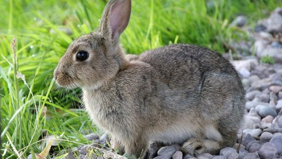

Rabbit
Rabbits are small mammals in the family Leporidae of the order Lagomorpha (along with the hare and the pika).
Scienttafic Name: Rabit
Average Length: 20 centimeters
Average Lifespan: 10 years
Habital: forests
Rabbits are small mammals in the family Leporidae of the order Lagomorpha (along with the hare and the pika). Oryctolagus cuniculus includes the European rabbit species and its descendants, the world's 305 breeds[1] of domestic rabbit. Sylvilagus includes thirteen wild rabbit species, among them the seven types of cottontail. The European rabbit, which has been introduced on every continent except Antarctica, is familiar throughout the world as a wild prey animal and as a domesticated form of livestock and pet. With its widespread effect on ecologies and cultures, the rabbit (or bunny) is, in many areas of the world, a part of daily life—as food, clothing, and companion, and as a source of artistic inspiration.